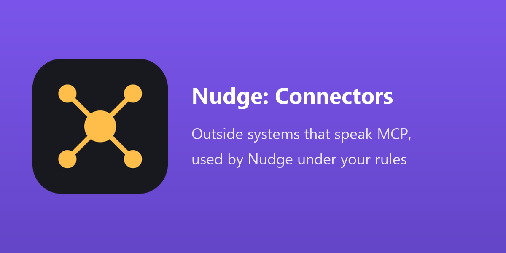

The tools a server offers come in as Not Allowed. The administrator reads each one and allows it as Read or Write, for the groups and companies he names.
A read runs for the person at once and the answer names where it comes from. A write shows the connector, the tool and exactly what is sent, on a card, and nothing is sent before the yes.
Every call is logged: who, which connector and tool, what was sent (secrets masked), the size of the answer and the time it took.